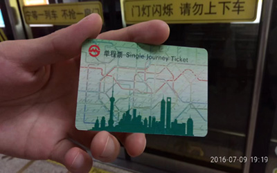
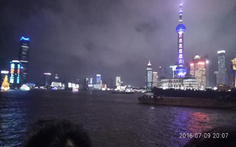

首页
说走就走的旅行
程序人生
民谣&摇滚
吉他自学
说走就走的旅行
魔都上海
生活就像一颗巧克力，你永远不知道下一颗会是什么味道~
上海之行第一天
七月九日一大早，爷爷就把我从床上拽了起来，说今天去上海，必须得起早点，你可以等火车可火车不等你啊，于是，睡眼惺忪的我也把正在睡梦中的老哥喊醒了，吃完爷爷做的早饭，收拾收拾行李，出发了！来到六安站，我们等了近两个小时，十点四十，动车来了，说实话第一次坐火车的我对火车充满了好奇心，乘车之前激动的心情无法用言语比表达。动车像一条白龙在千山万壑中穿梭，又在高楼大厦中往来，有时遇到另一辆动车从旁边驶过，两辆列车就像磁铁一样相互排斥，那种感觉忒刺激。一路上，有平原，有丘陵，有隧道，更有一阵阵欢笑声。。。下午三点多到了上海，刚下动车一股人流涌进地铁站，老哥买了地铁票，我还不知道咋使用，差点没进去，这里现代化设备太多了，我都没反应过来，地铁的特点就是快，一眨眼的功夫就到了宋园路，下了地铁，走了将近一公里来到了我们这几天要住的宾馆，从外观上看，挺豪华的，锦江之星新虹桥店，好像是全国连锁的。晚上吃了煲仔饭，去了外滩和南京路步行街，在去外滩的路上，呵，好家伙，那气势跟毛中放学时的场景有的一拼，不过外国人挺多的，一路上，交警维持道路畅通。一会儿的时间终于来到了外滩，还有壮阔的的黄浦江，遥望对面，是五彩斑斓的东方明珠塔和一栋栋拔地而起的高楼，黄浦江上一艘艘游轮缓慢行驶，耳畔传来的汽笛声是那么的悠长。。。跨过马路来到外滩十八号，其实这就是以前的渣打银行，现在变成了会所，里面挺神秘的。外面掇着一辆劳斯莱斯，霸气，门口一群韩国人谈着心，说实话，一句也听不懂。来到南京路步行街，首先进入了苹果体验店，从iwatch到mac，个个都吸引眼球，恨不得全部拥有，这条街上可谓是汇聚了市场上所有精品，老哥买了一个冰淇淋（哈根达斯）， 花了33，无语O__O。九点多了，满载着疲倦和喜悦回到了住处，结束了第一天。

图1：上海地铁票

图2：外滩夜景
共4页
第1页
下一页
目的地：上海
时间：2016年7月
主要景点：外滩、东方明珠塔、南京路步行街、城隍庙、豫园、中华少年宫、上海交通大学等高校